The egg takes about 2.5-3 days to hatch. The young caterpillar eats its way out of the mature egg, and then proceeds to finish up the rest of the egg shell. The newly hatched has a body length of about 2.75mm and has a rather spiky appearance caused by bands of spiky processes which are longer dorso-laterally and much shorter laterally. Overall the body is yellowish brown dorsally and darker brown laterally. The head is dark brown.
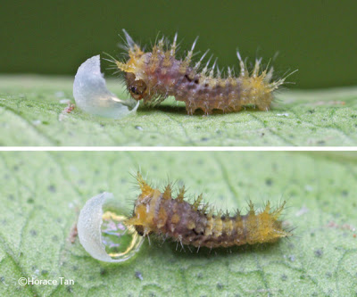The first 4 instars of the Lime Butterfly resemble bird droppings with the resemblance in the 3rd and 4th instars being closer due to the body taking on a slimy appearance. As the 1st instar caterpillar grows up to a length of about 5mm, the whitish saddle patch on the 3rd-4th abdominal segments become more evident. After about 2.5-3 days in 1st instar, the caterpillar moults to the next instar.
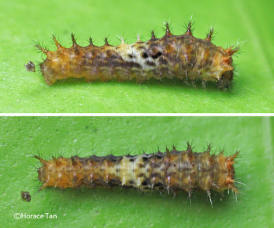The 2nd instar caterpillar has a similar appearance to the late 1st instar caterpillar except for the more prominent whitish saddle. As the caterpillar grows, small whitish patches appear laterally on the first two thoracic segments. This instar lasts about 2 days with the body length reaching up to 10mm before the next moult.
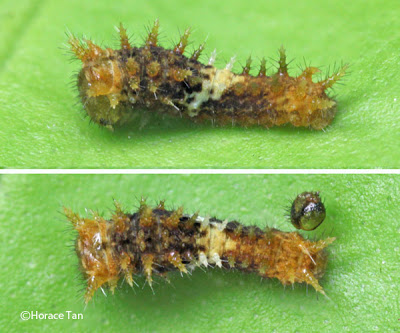 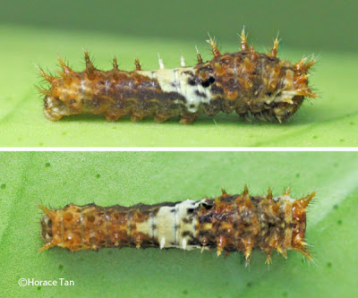The 3rd instar caterpillar has whitish lateral patches on the anterior and posterior body segments. The white saddle is more extensive and prominent than in the two previous instars. This instar takes about 2 days to complete with the body length reaching up to 16mm.
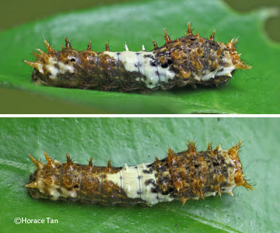 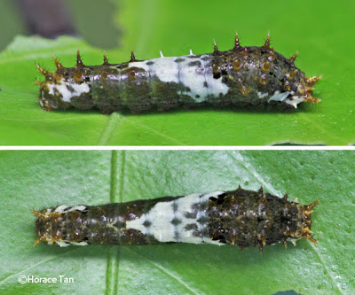The 4th instar caterpillar resembles the late 3rd instar caterpillar initially but with a more slimy appearance and a ground colour which is in darker brown. This penultimate instar lasts about 2-2.5 days with body length reaching about 25mm.
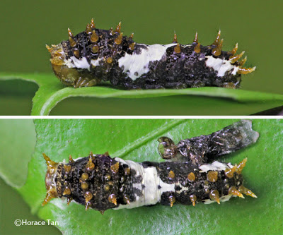 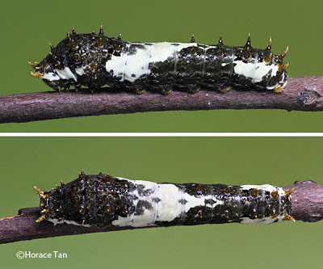The next moult brings the caterpillar to its 5th and final instar with a drastic change in appearance. There are two lateral eye spots near the leading edge of the third thoracic segment with a milky brown transverse band linking them. Another transverse band can be found at the posterior edge of the same body segment. A long oblique bar, dark brown in colour, stretches from the base of the 4th abdominal segment to the dorsum of the 5th abdominal segment. A much shorter bar can be found in the 6th abdominal segment. Round dorso-lateral marks, variable in size, can be found on the 6th to the 8th abdominal segments. After the moult to 5th instar, the body ground color is initially mottled yellowish green, but this changes gradually to a uniform green or yellowish green after about 0.5 day.
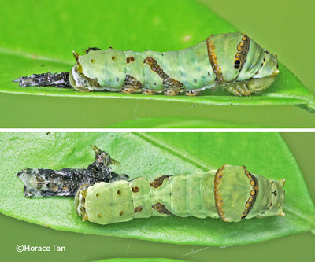 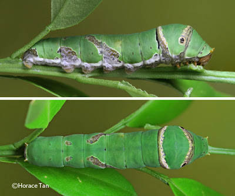 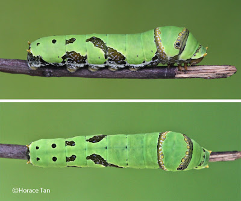As in the case of all Swallowtail butterflies, the Lime Butterfly caterpillars in all instars possess a fleshy organ called osmeterium in the prothoracic segment. Usually hidden, the osmeterium can be everted to emit a foul-smelling secretion when the caterpillar is threatened.
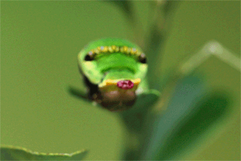The 5th instar lasts for about 3.5-4 days, and the body length reaches up to 41mm. Toward the end of this instar, the body gradually shortens in length. Eventually the caterpillar comes to rest on the under surface of a stem or a leaf. Here it stays dormant for a while before performing a purge of loose and wet frass pellets. It then spins a silk pad and a silk girdle to become an immobile pre-pupatory larva.
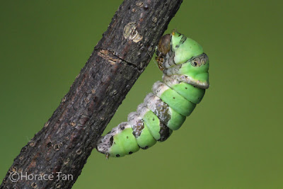